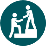
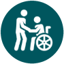
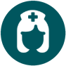
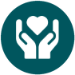

Morayfield, QLD
SIL Vacancy in Morayfield
- 4 bedrooms
- 2 bathrooms
NDIS SIL funding required
At Bharosa Community Services, we are a registered NDIS provider based in Brisbane, supporting participants across Queensland and Tasmania. We work closely with NDIS participants and their families to deliver tailored, high-quality disability support, whether that's occasional routine care, community access assistance, or a comprehensive 24-hour support package.
Our qualified support workers bring professionalism, empathy, and genuine care to every interaction across:
New to NDIS or unsure where to begin? Getting started with our Brisbane, Queensland NDIS support services is simple and stress-free. Follow three easy steps: Connect, Create, and Receive Support.
Learn moreNot sure which NDIS services are right for you? Our Brisbane-based team is here to help. Book a free consultation to discuss your needs and get personalised recommendations matched to your NDIS plan and goals.
Book nowNDIS funding can be complex, but we're here to simplify it. We'll explain how funding works, help you understand your plan, and ensure you make the most of your supports.
Learn moreWe offer a comprehensive range of NDIS support services to participants in Brisbane, Queensland, and Tasmania.

Assist Personal Activities Assistance with Social and Community Access Accessible Transport Services
High Intensity Daily Personal Activities (HIDPA) Group / Centre Based Activities Assistance in Household Tasks
Community Nursing Care Supported Independent Living (SIL) Short & Medium Term Accommodation Individualised Living Option
Support CoordinationSupported Independent Living homes with rooms available now in Queensland and Tasmania.
Bharosa Community Services is a leading disability support team, dedicated to empowering people through compassionate, reliable, and flexible care.
We believe in building inclusive communities and helping every participant reach their personal goals. Our team recognises that no two people are the same, and we take pride in designing supports that reflect your individual needs, lifestyle, and aspirations.
Learn More About BharosaEmpathy and genuine care in every interaction.
Qualified support workers you can count on.
From occasional routine care to 24-hour support.
Supports designed around your needs and goals.
Hear from our passionate team members about what makes working at Bharosa Community Services so special.
I’ve been working as a casual support worker at Bharosa for the past 2–3 months. I chose this role because I enjoy helping others and making a positive difference in their lives. My work involves assisting residents with daily tasks, supporting community access, and ensuring clients feel safe and valued. This experience has made me more patient, compassionate, and empathetic, while improving my communication and teamwork skills. It has also boosted my confidence and adaptability. I’m grateful to be part of the Bharosa Community and to keep growing both personally and professionally.
I have been working as a casual support worker at Bharosa for about a year. I chose this role because I enjoy helping people and supporting them to live more independently. My work includes assisting clients with daily tasks like meal preparation, shopping, appointments, and community activities. This job has taught me patience, empathy, and understanding, and shown me that small actions can make a big difference. Working at Bharosa has helped me grow personally and professionally, improving my confidence, communication, and problem-solving skills every day.
I have been working as a casual support worker for about 11 months. I started this job because I enjoy helping people and making their day a bit easier. Supporting clients to live comfortably and independently makes me feel happy and fulfilled. This role has helped me become more empathetic, patient, and confident. I have also learned how to communicate better, listen with understanding, and stay calm in different situations. Through my work, I’ve gained valuable experience supporting clients with daily needs and collaborating effectively as part of a caring team.
I have been working as a casual support worker for about three months. I chose this job because I enjoy helping people and making their lives easier. Every day is different—some days are more challenging than others. One person might feel low, while another may be in a heightened mood, and it’s important to talk with them and listen with empathy. Simply being there and offering a kind ear can make a big difference. This role has helped me grow personally and shown me how rewarding it is to make a positive impact on someone’s life.
Stay informed with the latest disability support news, NDIS updates, and community stories from our team in Brisbane and Queensland.
Find quick answers about our NDIS services, who we support, and how to get started.
Yes. Bharosa Community Services is a registered NDIS provider based in Brisbane, supporting participants across Queensland and Tasmania.
We support participants in Brisbane, Toowoomba, Ipswich, Logan, Sunshine Coast, Caboolture, and regional Tasmania.
Our support workers assist NDIS participants aged 18 to 65. Not sure if you're eligible? Contact our team and we'll talk you through your options.
Getting started takes three easy steps: Connect, Create, and Receive Support. You can also book a free consultation to talk about your needs and get recommendations matched to your NDIS plan and goals.
Yes. We'll explain how funding works, help you understand your plan, and make sure you get the most from your supports.
Use our online referral form, email info@bharosa.com.au, or call 1800 862 427.